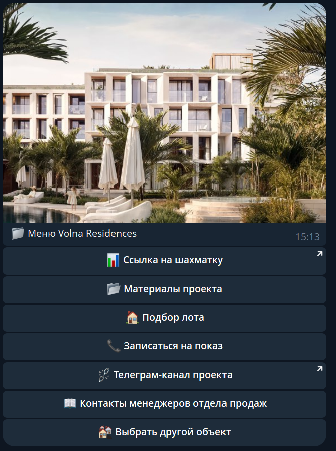

Инженер бизнес-автоматизации и веб-систем
Александр Сытов
Сайты, дашборды, интеграции и AI workflows для бизнеса.
Я собираю сайты, дашборды и системы автоматизации, которые связывают заявки, CRM, данные, API и AI в один рабочий бизнес-процесс.
Помогаю владельцам бизнеса создавать современные сайты, дашборды и automation workflows. Обычно моя работа соединяет landing pages, corporate websites, CRM, Google Sheets, Telegram, API и AI-инструменты в практичные системы, которые сокращают ручной труд и улучшают видимость процессов.

Услуги
Цифровые системы для офферов, операций и отчетности
Landing pages
Страницы для бизнес-офферов и лидогенерации с понятной структурой и контентом под конверсию.
Корпоративные сайты
Сайты, которые объясняют продукт, усиливают доверие и остаются готовыми к будущим интеграциям.
Дашборды
Метрики бизнеса, внутренняя отчетность, данные из Google Sheets, CRM-видимость и операционные сводки.
Интеграции
CRM, Telegram, Google Sheets, webhooks, REST API и бизнес-инструменты, связанные в один процесс.
AI-ассистенты
AI-assisted workflows, support bots, рекомендации, парсинг, переписывание контента и внутренние copilots.
Избранные проекты
Сайты, дашборды и системы автоматизации для бизнеса
OpenAI + Cloudinary + PostMyPost API
Автоматизация кросспостинга
Разработал систему, которая адаптирует Instagram-контент под разные форматы: переписывает тексты через OpenAI, обрабатывает медиа через Cloudinary и планирует публикации в 5-10 соцсетей через PostMyPost API. Маршрутизация и промпты управляются через интерфейс Google Sheets.
Результат
с 2 часов до 15 минут на один материал
SaaS mockup
StyleWeaver
SaaS-макет, созданный как личный продуктовый эксперимент. Показывает скорость прототипирования, работу с интерфейсной логикой и AI-assisted development workflow.
Демо-доступ: admin / animal32
Открыть StyleWeaver demoCustom API
APIInclusive
Старое API, написанное вручную для маркетингового процесса. Проект частично рабочий, но полезен как пример кастомной backend-логики вне визуальных конструкторов.
Смотреть репозиторийОпыт
От low-code сценариев до кастомной backend-архитектуры
Сентябрь 2024 - настоящее время
Freelance Developer (Automation)
Разрабатываю коммерческие автоматизации для дистрибуции контента, CRM-процессов, парсинга данных и AI-assisted workflows. Реализовал систему кросспостинга, сократившую время распространения материалов на 85%, и продуктовые эксперименты вроде StyleWeaver.
Май 2024 - сентябрь 2024
Low-Code Developer - Nedvex
Создал Telegram-бота на n8n, который помогает 50+ агентам ежедневно подбирать объекты недвижимости. Реализовал сложную фильтрацию лотов из XML-выгрузок и сквозную аналитику действий пользователей. Выполнил 10+ успешных проектов для компании.
Май 2022 - май 2024
Freelance Developer & .NET Engineer
Разработал backend для HashtagHelp, SaaS-сервиса автоматического построения hashtag funnels. Спроектировал REST API, структуру базы данных и интеграции с Google Services на ASP.NET Core и MySQL.
Сентябрь 2020 - июль 2022
Инженер-электронщик, embedded-разработчик - Royal Quest, Люберцы
Разрабатывал прототипы электронных устройств и программировал микроконтроллеры на C.
Технические навыки
Инструменты, на которых я запускаю бизнес-веб-системы
Automation & Low-Code
n8n, Make, Google Apps Script, REST API, Webhooks.
Web & App Development
React, Next.js, Node.js, JavaScript/TypeScript, HTML, CSS, API architecture.
Background: C#/.NET, ASP.NET Core, EF Core, MySQL.
AI & Tech
OpenAI API, Cloudinary, Cursor, Git/GitHub, Google Cloud.
Образование
Информатика и вычислительная техника
Московский технический университет связи и информатики. Выпуск 2024.
Языки
Английский: Intermediate to Upper-Intermediate (B1+/B2)
Русский: родной (C2). Работаю с технической документацией, клиентской коммуникацией и техническими заметками.
Обсуждение проекта
Нужно собрать бизнес-процесс, сайт или дашборд?
Напишите мне в Telegram или на email короткое описание задачи. Я помогу превратить ее в понятный план реализации.
Контакты